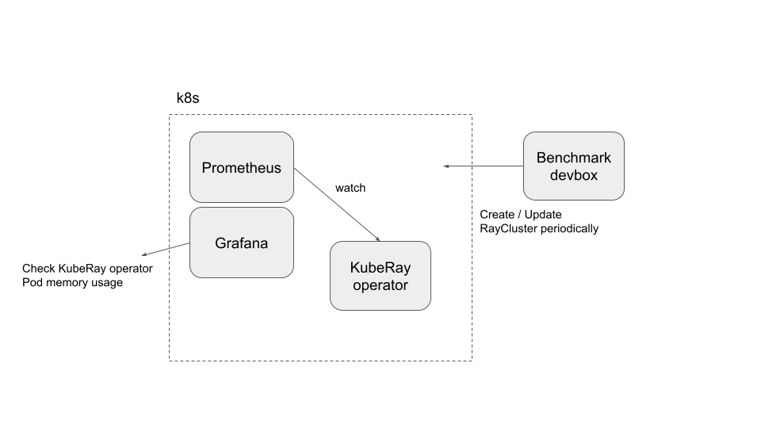
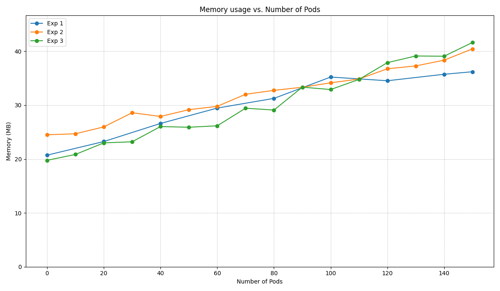

KubeRay 内存和可扩展性基准
Contents
KubeRay 内存和可扩展性基准#
架构#

这种架构是不好的实践，但它可以满足当前的需求。
准备#
克隆 KubeRay 仓库 并检出 master 分支。
本教程需要存储库中的多个文件。
步骤 1：创建一个 Kubernetes 集群#
创建一个 GKE 集群并启动自动扩缩容。
以下命令在 Google GKE 创建一个名为 kuberay-benchmark-cluster 的 Kubernetes 集群。
集群可以缩放到 16 个节点，每个 e2-highcpu-16 类型的节点拥有 16 CPU 和 16 GB 内存。
以下实现会在 Kubernetes 集群创建约有 ~150 Pods，并且每个 Ray Pod 需要 1 CPU 以及 1 GB 内存。
gcloud container clusters create kuberay-benchmark-cluster \
--num-nodes=1 --min-nodes 0 --max-nodes 16 --enable-autoscaling \
--zone=us-west1-b --machine-type e2-highcpu-16
步骤 2：安装 Prometheus 和 Grafana#
# Path: kuberay/
./install/prometheus/install.sh
跟随 “步骤 2: 通过 prometheus-grafana.md 使用 Helm chart 在 Kubernetes 安装 Prometheus Stack” 来安装 kube-prometheus-stack v48.2.1 chart 以及相关自定义资源。
步骤 3: 安装 KubeRay 控制器#
跟随 本文档 通过 Helm 仓库 安装最新的稳定版本的 KubeRay 控制器。
步骤 4: 运行实验#
步骤 4.1: 去报
kubectlCLI 可以连接你的 GKE 集群。如果不能，运行gcloud auth login。步骤 4.2: 运行实验
# 你可以修改 `memory_benchmark_utils` 来运行你想要的实验。 # (path: benchmark/memory_benchmark/scripts) python3 memory_benchmark_utils.py | tee benchmark_log
步骤 4.3: 跟随 prometheus-grafana.md 访问 Grafana 面板。
登录 Grafana 面板。
点击 “Dashboards”。
选择 “Kubernetes / Compute Resources / Pod”.
找到 KubeRay operator Pod 的 “Memory Usage” 面板。
选取时间范围，然后点击 “Inspect” 其次通过 “Data” 下载 KubeRay operator Pod 的内存内存使用数据。
步骤 4.4: 删除所有 RayCluster 自定义资源。
kubectl delete --all rayclusters.ray.io --namespace=default步骤 4.5: 重复 4.2 到 4.4 步骤来运行其他实验。
实验#
该基准测试基于三个基准测试实验：
实验 1: 启动有 1 个头节点且没有工作线程的 RayCluster。每 20 秒启动一个新集群，直到总共有 150 个 RayCluster 自定义资源。
实验 2: 创建一个 Kubernetes 集群，只有 1 个 RayCluster。每 60 秒向此 RayCluster 添加 5 个新 worker Pod，直到总数达到 150 个 Pod。
实验 3: 每 60 秒创建一个 5 节点（1 个头 + 4 个工作线程）RayCluster，最多 30 个 RayCluster 自定义资源。
基于针对 KubeRay 用户的 调查，基准目标设置为 150 个 Ray Pod，以覆盖大多数用例。
实验结果 (KubeRay v0.6.0)#

您可以通过运行命令生成上图：
# (path: benchmark/memory_benchmark/scripts) python3 experiment_figures.py # 输出图像 `benchmark_result.png` 存储在 `scripts/`。
如图所示，KubeRay算子Pod的内存使用量与Kubernetes集群中Pod的数量呈高度正相关。 此外，Kubernetes集群中自定义资源的数量对内存使用量并没有太大影响。
请注意，x 轴“Pod 数量”是创建而不是运行的 Pod 数量。 如果 Kubernetes 集群没有足够的计算资源，GKE Autopilot 会向集群添加新的 Kubernetes 节点。 此过程可能需要几分钟，因此某些 Pod 可能在此过程中处于待处理状态。 这种滞后可以解释为什么内存使用量受到一定程度的限制。